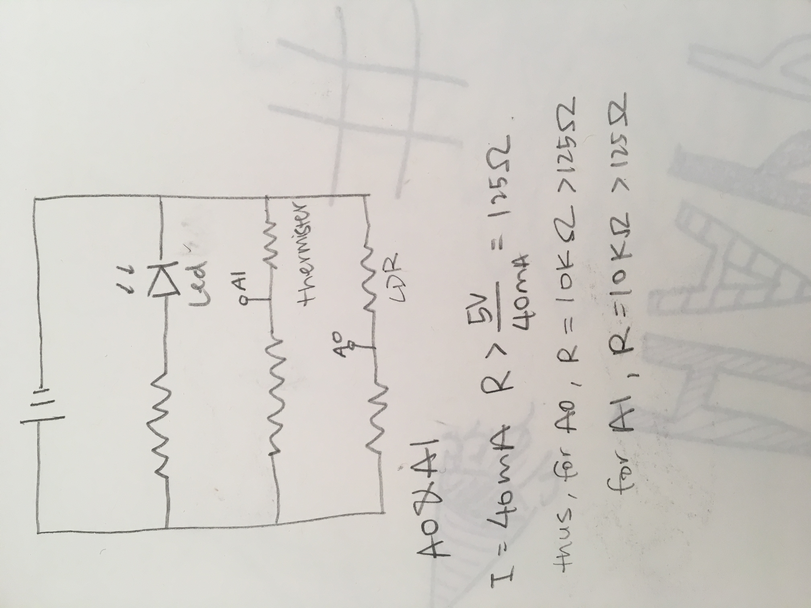
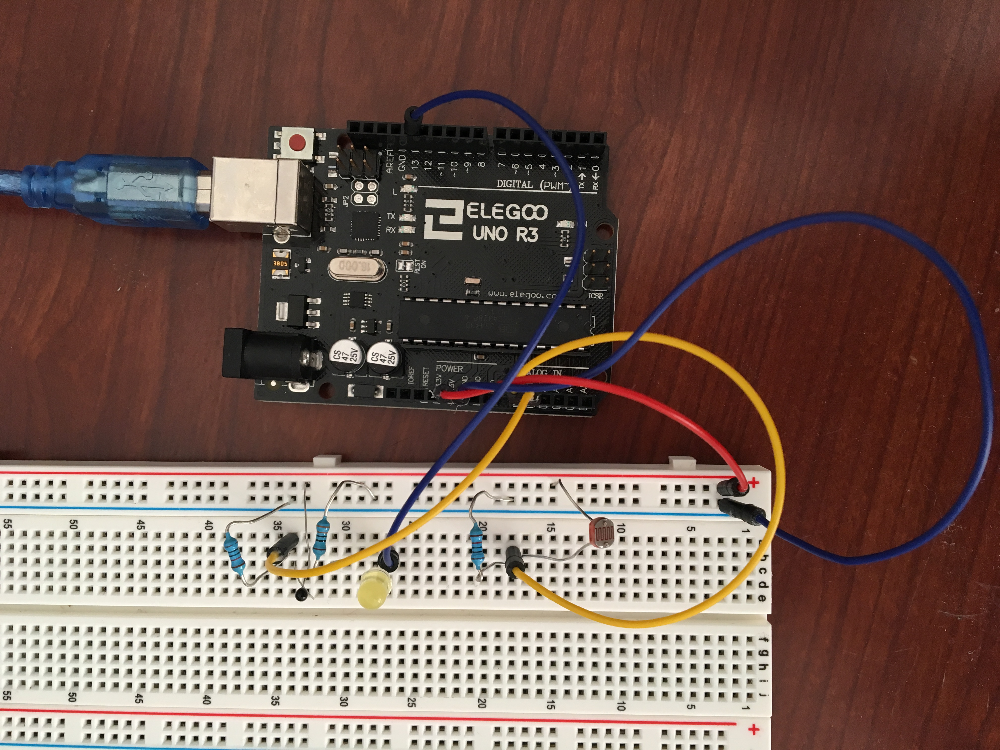

Assignment 7: Computer Control
Here is all the documentation for Assignment 7!
The Schematic
The Circuit
 This is the final set up for the circuit looping from pin 13, A0, A1 and 5V to GND.The Code Js
var serial; // variable to hold an instance of the serialport library
var portName = '/dev/cu.usbmodem14201' //rename to the name of your port
var dataarray = []; //some data coming in over serial!
var xPos = 0; // keeps track of the position of the graphs
function setup() {
serial = new p5.SerialPort(); // make a new instance of the serialport library
serial.on('list', printList); // set a callback function for the serialport list event
serial.on('connected', serverConnected); // callback for connecting to the server
serial.on('open', portOpen); // callback for the port opening
serial.on('data', serialEvent); // callback for when new data arrives
serial.on('error', serialError); // callback for errors
serial.on('close', portClose); // callback for the port closing
serial.list(); // list the serial ports
serial.open(portName); // open a serial port
createCanvas(1200, 800);
background(0x08, 0x16, 0x40);
}
// get the list of ports:
function printList(portList) {
// portList is an array of serial port names
for (var i = 0; i < portList.length; i++) {
// Display the list the console:
print(i + " " + portList[i]);
}
}
function serverConnected() {
print('connected to server.');
}
function portOpen() {
print('the serial port opened.')
}
function serialError(err) {
print('Something went wrong with the serial port. ' + err);
}
function portClose() {
print('The serial port closed.');
}
// prints out the readings
function serialEvent() {
if (serial.available()) {
var datastring = serial.readLine(); // readin some serial
var newarray;
try {
newarray = JSON.parse(datastring); // can we parse the serial
} catch(err) {
console.log(err);
}
if (typeof(newarray) == 'object') {
dataarray = newarray;
}
console.log("got back " + datastring);
}
}
function keyPressed() {
console.log("writing key");
serial.write(key);
}
function draw() {
stroke('rgba(0,255,0,0.25)'); // green
graphData(dataarray[0]);
stroke('rgba(0,80,255,0.5)'); // blue
graphData(dataarray[1]);
xPos++;
}
function graphData(newData) {
// map the range of the input to the window height:
var yPos = map(newData, 0, 1023, 0, height);
// draw the line
stroke(255, 0, 80);
line(xPos, 400, xPos, height - yPos);
var xPos = map(newData, 200, 500, width);
stroke(255, 0, 30);
line(yPos, 400, yPos, height - xPos);
// at the edge of the screen, go back to the beginning:
if (xPos >= width) {
xPos = 0;
// clear the screen by resetting the background:
background(gray);
}
text(dataarray[0] + "\n" + dataarray[1], 50, 50);
}
The Code Arduino
#include //import to do more advanced math calculation
const int ledPin = 13; //LED light is connected to pin 13
const int ldrPin = A0; //LDR is connected to A0
const int tempPin = A1; //Thermistr is connected to A1
//setup code to run
void setup() {
Serial.begin(9600); //initialize serial communication
Serial.setTimeout(10); //sets timeout for ParseInt
pinMode(ledPin, OUTPUT); //set the LED pin as an output
pinMode(tempPin, INPUT); //set the Thermister as an input
pinMode(ldrPin, INPUT); //set the LDR as an input
}
//converting Thermister reading value to Farenheit [code borrowed online]
double Thermister(int RawADC) { //put the raw data in the method
double t; //set variable tempture
t = log(((10240000/RawADC) - 10000));
t= 1 / (0.001129148 + (0.000234125 + (0.0000000876741 * t * t ))* t );
t = t - 273.15; // Convert Kelvin to Celsius
t = (t * 9.0)/ 5.0 + 32.0; // Celsius to Fahrenheit - comment out this line if you need Celsius
return t; //reture the input value out
}
void loop() {
if (Serial.available() > 0) { // if there's serial data
int inByte = Serial.read(); // reads serial data
Serial.write(inByte); // send it back out as raw binary data
analogWrite(13, inByte); // use it to set the LED brightness by writing data to pin 5
}
int ldr = analogRead(ldrPin);
double t; //create temputure variable
int temp = analogRead(tempPin); //read in the raw data of the thermister
t = Thermister(temp); //parse the raw data into Fahrenheit
if (ldr <=300) { //check if there are light; in this case no light
digitalWrite(ledPin, HIGH); //no/dim light so turn on the LED
} else {
digitalWrite(ledPin, LOW); //bright light so LED off
}
//send to server the array to process on web
Serial.print("[");
Serial.print(ldr);
Serial.print(",");
Serial.print(t);
Serial.println("]");
delay(100); //pause for 100Ms
}
The Operation of the Circuit
Below is a short demo of the circuit in operation.